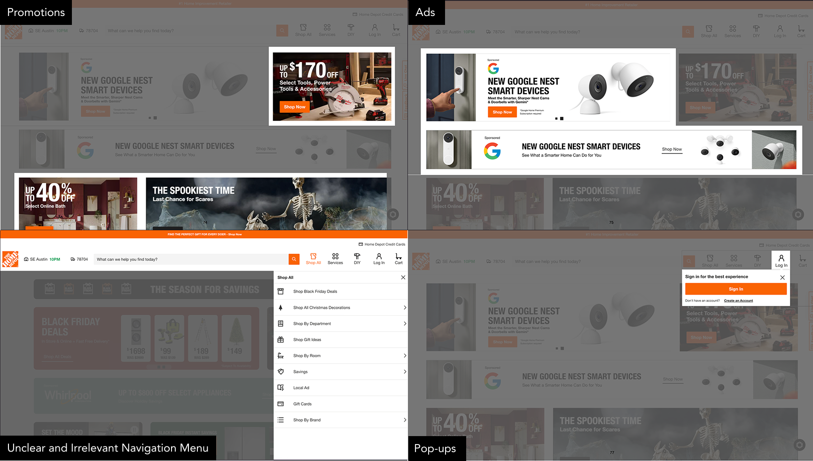
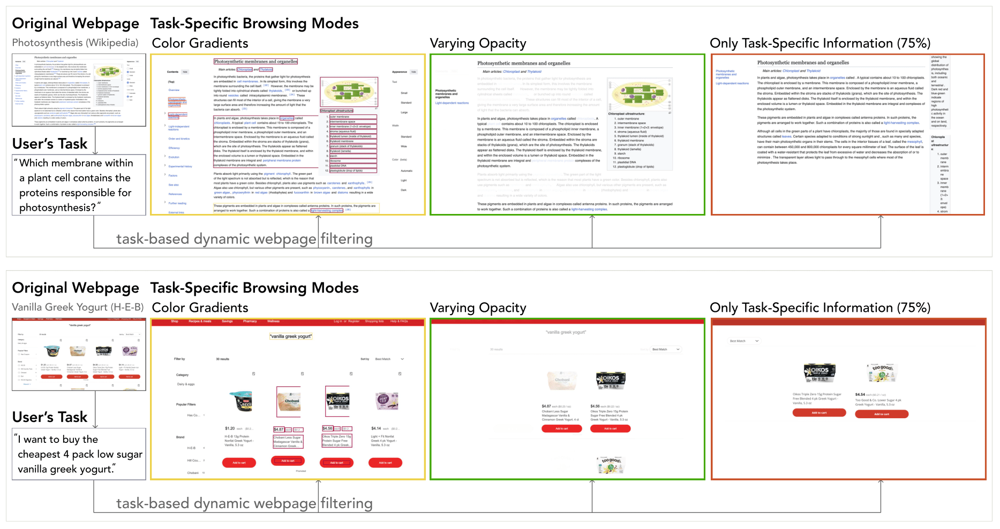

Task Mode: Dynamic Filtering for Task-Specific Web Navigation using LLMs
University of Texas at Austin
ASSETS 2025
Abstract
Modern web interfaces are unnecessarily complex to use as they overwhelm users with excessive text and visuals unrelated to their current goals. This problem particularly impacts screen reader users (SRUs), who navigate content sequentially and may spend minutes traversing irrelevant elements before reaching desired information compared to vision users (VUs) who visually skim in seconds. We present Task Mode, a system that dynamically filters web content based on user-specified goals using large language models to identify and prioritize relevant elements while minimizing distractions. Our approach preserves page structure while offering multiple viewing modes tailored to different access needs. Our user study with 12 participants (6 VUs, 6 SRUs) demonstrates that our approach reduced task completion time for SRUs while maintaining performance for VUs, decreasing the completion time gap between groups from 2x to 1.2x. 11 of 12 participants wanted to use Task Mode in the future, reporting that Task Mode supported completing tasks with less effort and fewer distractions. This work demonstrates how designing new interactions simultaneously for visual and non-visual access can reduce rather than reinforce accessibility disparities in future technology created by human-computer interaction researchers and practitioners.
Types of Webpage Distractions

Modern webpages contain numerous elements that can distract users from their primary goals. We categorize these distractions into several types: navigational elements (headers, sidebars, menus), promotional content (advertisements, banners, pop-ups), social features (comments, sharing buttons, recommendations), and supplementary information (related articles, footers, metadata). For screen reader users, these distractions are particularly challenging as they must navigate through content sequentially, encountering each element in order rather than visually scanning and skipping irrelevant sections.
Pipeline
![The figure shows a diagram of system pipeline. From left to right, the diagram shows 6 groupings or columns, all connected by arrows pointing to the right. The first group includes Selected Image and Webpage. From Selected Image, there are two arrows pointing right to Alt and Image which are in the second group. From Webpage, there are three arrows pointing right to Title, URL, and Text (also in the second group). In the third column, there is an arrow pointing from URL to Purpose, and from Text there is an arrow pointing to the right to “Text to Image Distance (pixels), Text to Image Location (L, R, T,B), and Text to Image Similarity (CLIPScore). The Image also points to the right to Long Context-free Image Description and Initial Context-aware Image Description in the fourth group. Image, Alt, Title and Initial Context-aware Image Description all point to the right to Visually Concrete Text in the fifth column. The Long Context-free description points to the right to Short Context-free Image Description. The Visually Concrete Text and The Image point to the right to Long Context-Aware Image Description in the right in the sixth group. The Long Context-Aware Image Description points downwards to the Short Context-Aware Image Description.](media/taskmode-pipeline.png)
The system takes a webpage and a selected webpage image as selected by the user, then extracts all of the text elements on the page. It analyzes the webpage to get an image relevance score for each text element. Our score considers the distance between the text element and the target image, position of the text in comparison to the image, and the CLIP score similarity between the image and the text. For each text element, we combine these scores together to achieve the final relevance score. We use the extracted context text and its scores to inform the final context-aware description.
System
Task Mode is implemented as a browser extension that dynamically filters webpage content based on user-specified tasks. Users activate the extension and describe their goal in natural language. The system then uses large language models to analyze the page structure, identify task-relevant elements, and present different visualization modes to help users focus on what matters for their specific task.
The visualization modes allow users to toggle between viewing all content, highlighting relevant elements with dimmed distractions, or showing only task-relevant content. This flexibility lets users choose the level of filtering that best suits their needs and preferences.
For screen reader users, Task Mode restructures the page's accessibility tree to prioritize task-relevant elements, dramatically reducing navigation time. The system preserves page structure while filtering out distractions, allowing users to quickly access the information they need without losing context.
Results

Original Webpage

Task Mode

Example context-free and context-aware descriptions for a website and image selected by P8.
BibTeX
@article{mohanbabu2025task,
title={Task Mode: Dynamic Filtering for Task-Specific Web Navigation using LLMs},
author={Mohanbabu, Ananya Gubbi and Sechayk, Yotam and Pavel, Amy},
journal={arXiv preprint arXiv:2507.14769},
year={2025}
}